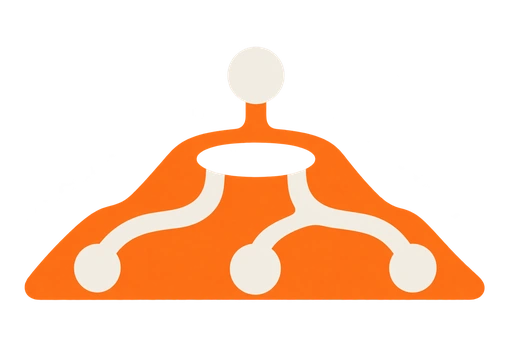
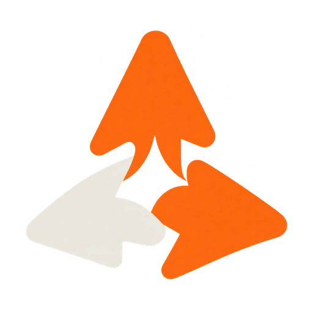
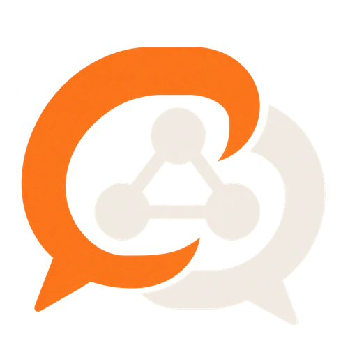
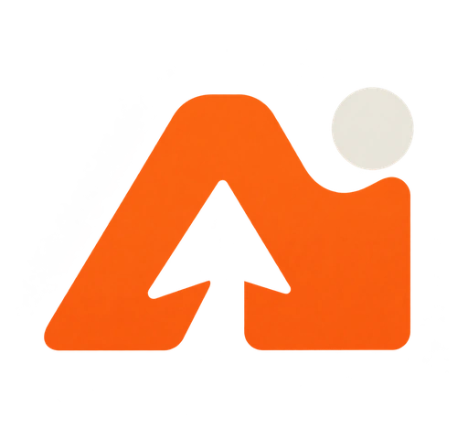

제주 뉴런
한라산의 분화구와 신경망을 결합해 제주와 AI의 만남을 표현했습니다.

MOBILE HEADER PREVIEW
제주 AI 컨퍼런스
소개일정FAQ
JEJU AI CONFERENCE 2026
제주, Agent, 신경망, AI 이니셜.
각 심볼과 모바일 헤더에서의 인상을 비교해 보세요.
한라산의 분화구와 신경망을 결합해 제주와 AI의 만남을 표현했습니다.

MOBILE HEADER PREVIEW
함께 모이는 커서로 여러 Agent의 협업과 컨퍼런스의 연결을 담았습니다.

MOBILE HEADER PREVIEW
대화와 신경망을 결합해 AI에 대한 경험과 지식이 오가는 장을 표현했습니다.

MOBILE HEADER PREVIEW
A와 I를 하나의 형태로 엮고 제주의 산과 커서를 여백에 담았습니다.

MOBILE HEADER PREVIEW